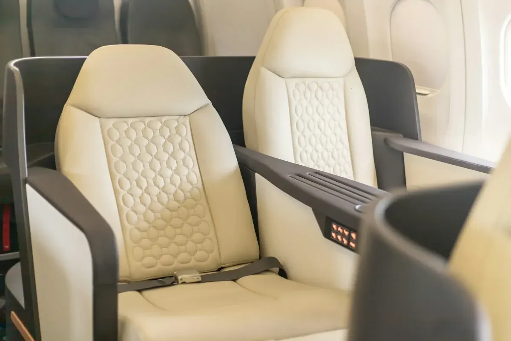

Aviation upholstery
Aircraft cabin and cockpit interiors
A rare trade in this region. We have been trimming aircraft interiors alongside cars and boats for decades.

Seating
- Cockpit and cabin seats
- Foam replacement and reshaping
- Stitched detail work to a high finish
Cabin trim
- Side panels and trim
- Carpet and floor coverings
- Consistent finish across the cabin
Working with you
- Materials specified before any cutting starts
- Bring the aircraft or the seats to the shop
- Free, itemised estimate
02Recent work
Jobs out of this shop


03Frequently asked questions
Answers before you call
Do you do full cabin interiors?
Yes — seating, side panels, carpet and trim, finished consistently across the cabin.
Can I bring just the seats?
Absolutely, and it is often the easiest way to do it. Remove them and bring them to the shop in Monroe.
How is aviation work different from automotive?
The standard of finish and the attention to weight and fit are higher, and the materials differ. It is the same craft, held to a tighter tolerance.
05Ready when you are
Ready to transform your interior?
Bring new life to your seats, tops, and trim with work built for comfort, durability, and long-term pride of ownership.
Free estimates · In-person quotes · Monroe, NC since 1989